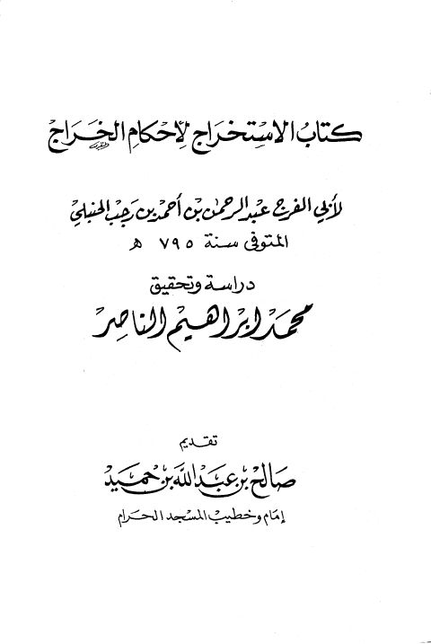

Downloads need an internet connection.
كتاب الاستخراج لأحكام الخراج
Authors: ابن رجب الحنبلي
Editors: محمد إبراهيم الناصر
Publishers: جامعة أم القرى
**▫️ العنوان: كتاب الاستخراج لأحكام الخراج** ▪️ المؤلف: #عبد_الرحمن_بن_أحمد_بن_رجب_الحنبلي ▫️ المحقق: #محمد_إبراهيم_الناصر ▪️ الناشر: #جامعة_أم_القرى ▫️ تاريخ النشر: 1991 م ▪️ بلد النشر: مكة المكرمة، #السعودية ▫️ الطبعة: 1 ▪️ عدد الأجزاء: 1 ▫️ الصفحات: 448 ▪️ نوع الوعاء: #كتاب ▫️ التصنيف الرئيسي: #الفقه_وأصوله ▪️ التصنيف الفرعي: #الفقه_الخراج ۪